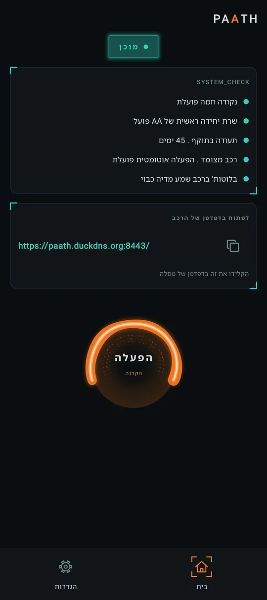
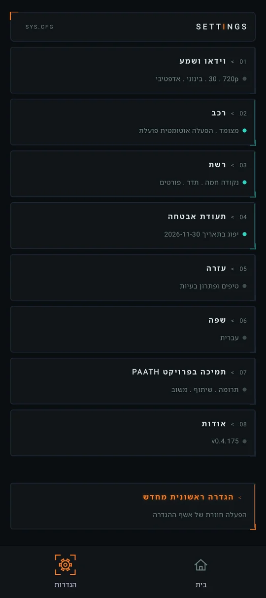
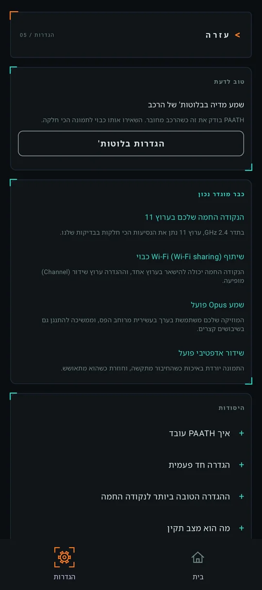
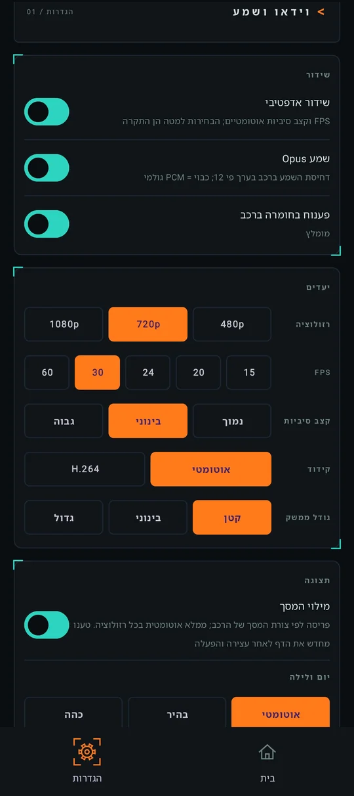

טלפון > נקודה חמה > דפדפן הרכב
Android Auto, בדפדפן של הרכב שלכם.
הטלפון משדר אותו דרך נקודה חמה משלו. בלי מתאם, בלי כבל, ובחינם.
Android 10 ומעלה . נבנה בשביל טסלה


איך זה עובד
שלושה שלבים, בלי חומרה נוספת
- 01
הטלפון מריץ את Android Auto
בדיוק כאילו הוא מחובר לרכב, עם אפליקציות הניווט והמוזיקה שאתם כבר משתמשים בהן.
- 02
נקודה חמה משלו מעבירה את השידור
הרכב מתחבר לנקודה החמה של הטלפון. בלי מתאם, בלי כבל ובלי שירות ענן באמצע.
- 03
הדפדפן של הרכב מציג אותו
תמונה, שמע ומגע, על המסך של הרכב עצמו. פותחים פעם אחת את הכתובת שמופיעה ב‑PAATH, וזהו.
צילומי מסך
מה מקבלים
מסכים מטלפון שמריץ את PAATH.



מה צריך
לפני שמתחילים
Android 10 ומעלה
בטלפון שנוסע איתכם ברכב.
Android Auto
כשההגדרה למפתחים "הפעלת שרת של יחידה ראשית (Start head unit server)" מופעלת. PAATH מראה לכם איך.
נקודה חמה של Wi-Fi
בטלפון, עם חבילת גלישה פעילה. הרכב מתנתק מנקודה חמה שאין בה אינטרנט.
רכב עם דפדפן
כל דפדפן אינטרנט עדכני. תוכנן ונבדק בטסלה.
ההגדרה הראשונית, צעד אחר צעד, נמצאת בעמוד העזרה.
גישה מוקדמת
הצטרפות לבדיקה ב‑Google Play
PAATH נמצא בבדיקה סגורה לפני שהוא נפתח לכולם. שני שלבים, בערך דקה.
- 01
הצטרפות לקבוצת הבודקים
השתמשו באותו חשבון Google שמחובר לחנות Play בטלפון.
הצטרפות לקבוצה - 02
הרשמה כבודקים
בעמוד הבדיקה של Play, הקישו על הכפתור להצטרפות כבודקים. אחר כך הקישו על הקישור להורדה מ‑Google Play כדי להתקין.
פתיחת עמוד הבדיקה
- רק מי שהקיש על כפתור ההצטרפות כבודקים נספר, אז חשוב לעשות את שני השלבים.
- הישארו בקבוצה לאורך כל הבדיקה. מי שעוזב את הקבוצה יוצא מהבדיקה. יותר מדי מיילים? שנו את ההגדרה של הקבוצה לסיכום או לבלי מיילים.
- הגישה יכולה להגיע כמה דקות אחרי ההצטרפות.
לא חובה
הפעלה אוטומטית, אם תרצו
צימוד הרכב
PAATH מתחיל כשנכנסים לרכב. הפעילו את עצירת שידור כשיוצאים מהרכב, והוא גם עוצר בערך 25 שניות אחרי שיוצאים.
נקודה חמה מעצמה
בעזרת האפליקציה החינמית Shizuku הנקודה החמה נדלקת מעצמה כשהרכב מתחבר. כשהאפשרות עצירת שידור כשיוצאים מהרכב מופעלת, היא גם נכבית כשיוצאים.
פרטיות
שום דבר שאתם עושים ב‑PAATH לא יוצא מהטלפון
- השידור נשאר בנקודה החמה של הטלפון, בין הטלפון לדפדפן של הרכב. בלי ענן.
- בלי חשבון, בלי ניתוח שימוש, בלי פרסומות ובלי מעקב.
- קובץ האבחון מגיע למפתח רק אם תבחרו לשלוח אותו.